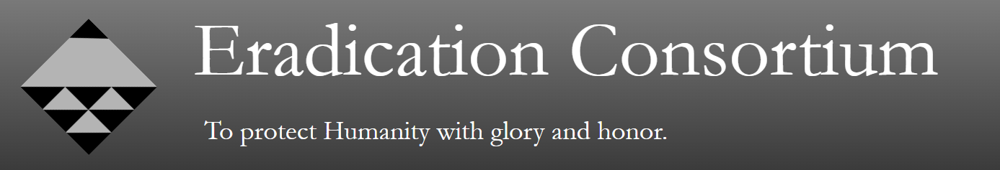

Overview (OOC)
Known to outsiders as the Axland Hunting Club, the Secretive Eradication Consortium was founded in 2014 following the Skyshatter Anomaly. Based in the fictional town of Axland, the eradication consortium seeks to eliminate, and when possible, capture the various anomalous lifeforms that have recently emerged from the surrounding woods. The Consortium was formed when the venture capitalist, Curtis Gil, was found dead following a meteor shower now known as the Skyshatter Anomaly. His two young daughters, who had been staying with him at the time, had vanished without a trace and were presumed dead. In the resulting vacuum of power, his twenty year old son, Ambrose Gil, who had now been given his father’s full inheritance, quit college and created the Consortium with the sole purpose of bringing justice to the killers of his father. Roughly 500 strong, the Eradication Consortium is always looking for new members to work in the various departments. Offering competitive wages and benefits for those who look for it, most people unaware of the true nature of the Axland Hunting Club will be thrilled to join. Unbenounced to them however, is the true nature of the organization. The skyshatter anomaly refers to a meteorite which crashed in the woods surrounding Axland. Although experts believed that the meteorite was nearly 200 ft in diameter, no visible damage was done to the landscape, making the meteor the first of many anomalies which would soon be discovered. After it was clear that Ambrose Gil’s father was not killed by a human adversary, but rather a dangerous and elusive anomaly, the Eradication Consortium moved underground, both physically and figuratively. Currently, the Eradication Consortium exists as a lore focused roleplay group to complement the closed species [NAME THEM!]. Loosely based on media like The SCP Foundation and All Better Now.